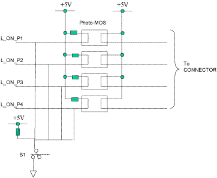

Operating Documentation
Direction 5181178-800, Rev# 16
BrightSpeed Select Service Methods Gen
Module Version 1.0, Version Date 2/16/07
Operating Documentation |
The FPGA on the ORP board performs major functions of the board.
This FPGA has the following functions:
LSCOM control
Chip selection
Store of Revision No.
I/O gate
Output register
Status register
Interrupt control
X-ray control
Some of the functions above are described below:
LSCOM Control:
The ORP processor communicates with the TGP board via this FPGA and slip rings. The LSCOM has the encoding/decoding function of serial signal, and transmits/receives data in virtual ethernet environment, and a hardware signal (EXP_ENBL) between ORP and TGP.
Revision No.:
The FPGA stores the part No., variation No., and revision No. of the ORP board.
X-ray Control:
The FPGA controls gates for DAS_TRIG and EXPCMD signals.
The ORP board has a watchdog timer function. The watchdog deters uncontrolled run of firmware, if it took place.
Although the ORP has an Ethernet Controller chip, this is used for development only.
The ORP board has two CAN channels: CAN1 and CAN2. CAN1 is used for connection of the DCB and CCB, while CAN2 is used for connection of the Jedi generator.
LSCOM is the communication way between ORP and TGP via slip rings. It uses three signals: SER_SREF (reference signal), SER_OUTBOUND (transmit signal), and SER_INBOUND (receive signal).
The LSCOM interface needs an isolated +/- 5Vdc bipolar power supply to power the driver/receiver circuits. In addition, optical isolation is maintained between the slip rings and the ORP logic circuits.
The ORP board receives EXP_ENBL signal from the TGP board via a slip ring for interrupting EXPCMD signal to JEDI.
The ORP board provides +5Vdc power to the alignment lights. As shown in Illustration 1, the OPR provides four control lines which are independent of among others, allowing, for example, extinguishing three lights and switching on only one light.
Illustration 1: Alignment Light Control

The ORP provides an A/D interface for monitoring the on-board regulated power supplies: +12V (for RCIB1 and RCIB2) / +5V (for logic circuits).
The ORP CPU receives signals from thermal sensors: one (LM35DM) is located on the board itself, and the other (LM35DP) is located outside the board.
Temperature measurement range: 2 - 55.0 degrees C
Accuracy: +/- 1.5 degree C
The signals are converted to digital data by the CPU built-in A/D converter.
Table 1: Switches
| Switch | Description |
| Reset | for hardware reset |
| TEST | for board test |
| Alignment Light Switch | for manual on, auto |
Table 2: LEDs Information
| REF | Silk | Color | Description |
| For RCIB | |||
| DS1 | PSOK1 | Green | Indicates that the RCIB1 loop back signal (+12V) is sensed. |
| DS2 | PSOK2 | Green | Indicates that the RCIB2 loop back signal (+12V) is sensed. |
| For CPU | |||
| DS3 | RUN1 | Green | Blinks at the time of program operation. Unused currently. |
| DS4 | RUN2 | Green | Blinks at the time of program operation. Unused currently. |
| DS5 | ERROR | Orange | The light is switched on at the time of error generating, and is put out at the time of error dissolution. Unused currently. |
| DS6 | ERR_HIST | Orange | Indicates that an error has occurred. Unused currently. |
| DS7 | FW_LED1 | Green | Usage hasn't decided. |
| DS8 | FW_LED2 | Green | Usage hasn't decided. |
| DS9 | FW_LED3 | Green | Usage hasn't decided. |
| DS10 | FW_LED4 | Green | Usage hasn't decided. |
| For LSCOM | |||
| DS11 | RESET | Green | The board is currently in rest. (Used for troubleshooting the hard reset across the slipring) |
| DS12 | RHIST | Green | The board has been reset. (Used for troubleshooting the hard reset across the slipring) |
| DS13 | RX_BUSY | Green | Indicates that the receive state machine is busy. |
| DS14 | TX_BUSY | Green | Indicates that the transmit state machine is busy. |
| DS15 | VIOLATION | Orange | Indicates that the current word is not valid. |
| DS16 | VHIST | Orange | Indicates that a violation has occurred. |
| DS17 | LINK DISCONNECT | Red | Indicates that the serial input is not connected. |
| For Ether | |||
| DS18 | BS | Green | Board Select. Not mounted currently. |
| DS19 | LNK | Green | Link. Not mounted currently. |
| DS20 | RX | Green | Receive. Not mounted currently. |
| DS21 | TX | Green | Transmit. Not mounted currently. |
Table 3: Test Pins
| TP# | Name | Description |
| 1 | P24_IN | +24V (Source) |
| 2 | P24_RTN | +24V GND |
| 3 | P12 | +12V for RCIB |
| 4 | P5 | +5V for Logic |
| 5 | P3_3 | +3.3V for Logic |
| 6 | P2_5 | +2.5V |
| 7 | P1_9 | +1.9V |
| 8 | LGND | GND for Logic |
| 9 | +5V_ISO | +5V for LSCOM |
| 10 | -5V_ISO | -5V for LSCOM |
| 11 | IGND | GND for LSCOM |
| 12 | AGND | Analog GND |
| 13 | ON_TEMP | On board Temperature signal |
| 14 | RMT_TEMP | Remote Temperature signal |
| 15 | MONI_P12 | Voltage monitoring at +12V |
| 16 | MONI_P5 | Voltage monitoring at +5V |
| 17 | DAS_TRIGGER | DAS trigger signal |
| 18 | FINAL_EXP | Final exposure signal |
| 19 | FLT1 | FLT control signal of RCIB1 |
| 20 | FLT2 | FLT control signal of RCIB2 |
| 21 | PSOK1 | PSFB signal of RCIB1 |
| 22 | PSOK2 | PSFB signal of RCIB2 |
| 23 | XRON_IN | Xray on signal of RCIB1,2 |
| 24 | ERROR_INJECT | Error inject signal |
| 25 | LGND | GND for Logic |
| 26 | DAS_TRIG(LSCOM) | DAS trigger signal in FPGA |
| 27 | EXPCMD(LSCOM) | Exposure signal in FPGA |